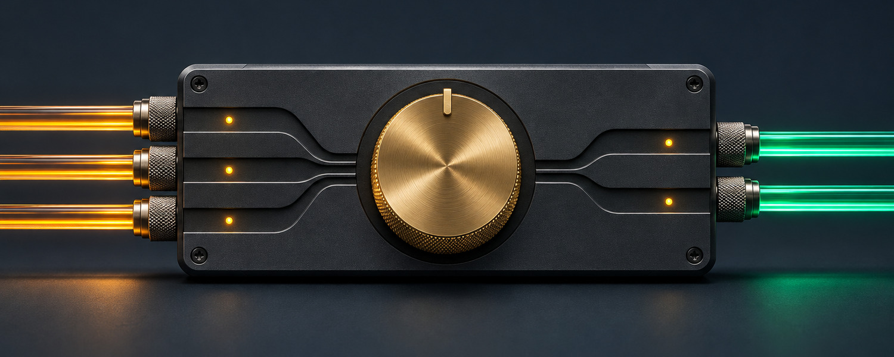
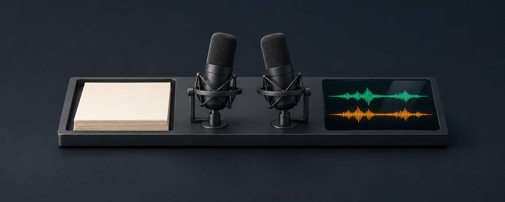

Background multi-cursor browser and macOS computer-use engine across unfocused Chrome tabs and native apps.
LIFAN CHEN · SEATTLE · STAFF ENGINEER @ GOOGLE
Local Mac tools, multi-agent harnesses, and measurable evals.
Interactive build inspector for Faster Mac Use, Agent Autofill, QuotaSwitch, CloseSnow, FreshPowder, Perks Reminder, and AI Builder Brief. Full details follow in Selected Builds below.
Selected Builds
Filter by domain or hover any card to inspect its live telemetry and transition into its showcase.
Local-first personal vault and MCP broker for macOS agents with scoped credentials and explicit approval gates.

30s multi-account rotator and local OpenAI-compatible gateway (:18455/v1) for Antigravity & Codex with expiry-first credit drain.
Free 15-day mountain snow forecaster across 120 Ikon & Epic resorts with calibrated ±1σ error bars, 3D Cobb/Alcott SLR, and live USDA SNOTEL.

Multi-catalog specialist deal engine powering 5 gear worlds across 91 retailers.
Ski and snowboard deal aggregator across 28 North American shops, filtered by size and budget.

Open-source credit card benefits, welcome bonus, and annual-fee ROI tracker with zero bank logins.

Evidence-gated daily AI brief distilling noisy launches into source-linked Top 10 technical developments.
Weekly six-minute Chinese podcast synthesized from USCardForum threads with source receipts via RSS.
Local-first Chrome harness for exporting patient-owned Epic MyChart records into Markdown & JSONL with zero cloud custody.
Ad-free AI-curated iPhone ambient photo frame for Amazon Echo Show (Vega OS & Fire OS) with 1600×960 portrait diptychs and Juno DNS sinkholing.

Fail-closed Python framework for source-transparent podcast pipelines with StoryCluster gates, NotebookLM, and atomic R2 + RSS.
Open-Source Packages & Agent Harness Primitives
Context Harness ↗
4-file filesystem memory contract and companion skills for coding agents (paired eval across 32 repos: 9.1/10 vs 7.0/10).
castforge (PyPI) ↗
Installable Python source-to-podcast package with OIDC trusted publishing, StoryCluster gates, and atomic R2 + RSS checks.
@lifan-builds/foliofen-cli ↗
Offline synthetic sandbox and patient-scoped local Epic MyChart Markdown/JSONL exporter package.
Writing, Quick Thoughts & Field Notes
Sharp builder takes (X, Reddit, RedNote), long-form essays, and 68 daily AI Builder Briefs.
Flagship Essays & Build Logs
Deep Dives
Why I built a local personal vault for AI agents on my Mac ↗
Brokering scoped fields, Keychain logins, and 2FA codes without cloud bot vaults.
Why I built Foliofen CLI while the portal kept changing ↗Exporting patient-owned records locally without handing a third party permanent account custody.
Show HN: Foliofen CLI — Technical feedback & failure modes ↗Why local control is only a real feature when recovery paths and scope limits are explicit.
Building Perks Reminder: A free, open-source benefits tracker ↗Keeping reminders, exportable JSON, and correction paths local without bank logins.
Daily AI Builder Briefs
68 EditionsDaily field notes on AI developments that change what builders make and evaluate, with primary receipts.
Quick Thoughts & Builder Takes (X · Reddit · RedNote 小红书)
All quick takes (EN / 中文) →
Turning unused Codex quotas into a bounded execution worker →
Gemini 4 orchestrates; Codex runs read-only gpt-6.2-sol or git-guarded --allow gpt-6.2-astra via quotaswitch codex exec (EN / 中文).
Echo Show is decent hardware ruined by Amazon’s ad team →
Auto-curating 5,000+ iPhone photos into 16:10 side-by-side portrait pairs and blocking Vega OS’s 4 ad-beacon domains (EN / 中文).
The only viable way to use Codex quota →
Carbon for Plan, Design & Verification; GPT (Astra / 6.1 Sol) locked to Implementation Only via Proxy API (EN / 中文).
open = close: ±1σ error bars for CloseSnow →
Why single-number snow forecasts mislead skiers, and building a free 120-resort forecaster with honest ±1σ spread (EN / 中文).
As an NVDA shareholder: waiting for Jensen’s world tour →
33 years from CUDA to the global AI compute stack—GTC and Computex lose half their soul without the leather jacket (EN / 中文).
On reverse-engineered console games on iOS →
Great Agent porting benchmark, poor phone experience vs. native mobile hits like Balatro (EN / 中文).
Opus 5.5 cured my Vibe Coding burnout →
Why daily quota FOMO and fighting defensive GPT slop kills builder flow state (EN / 中文).
Why I avoid cloud bot password vaults →
Shared bot VM state, plaintext CSV imports, and why local Keychain + 1-time extension handles win.
Small context beats broad repo archaeology →
Paired eval across 32 repos: 9.1/10 vs 7.0/10 after replacing prompt walls with 4 compact files.
Building a local MyChart CLI in the NICU →
Keeping daily family lab records current on-device without uploading PHI to third-party clouds (EN / 中文).
About
What I build on nights and weekends, and why most of it stays local.
I’m a Staff Engineer at Google in Seattle. Outside work, I build local Mac utilities, multi-agent harnesses, and snow or gear trackers whenever existing apps get bloated, overpriced, or start cramming ads onto my screens.
My defaults are simple: keep private data on your own machine, verify speed and token wins with real runs instead of slides, and stop for human approval before anything touches an external account.
The Evaluation Loop
Click a stage to inspect
01 · Source — Anchor on primary artifacts
Start from raw commits, protocol traces, and DOM snapshots rather than secondary summaries so every claim is reproducible.
Applied in: AI Builder Brief & Foliofen CLI